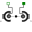

ShapeExtraType of the additional data that can be defined for an elementary ShapeType |
|
Information
This information is part of the Modelica Standard Library maintained by the Modelica Association.
This type is used in shapes of visual objects to define extra data depending on the shape type. Usually, input variable extra is used as instance name:
| shapeType | Meaning of parameter extra |
|---|---|
| "cylinder" | if extra > 0, a black line is included in the cylinder to show the rotation of it. |
| "cone" | extra = diameter-left-side / diameter-right-side, i.e., extra = 1: cylinder extra = 0: "real" cone. |
| "pipe" | extra = outer-diameter / inner-diameter, i.e, extra = 1: cylinder that is completely hollow extra = 0: cylinder without a hole. |
| "gearwheel" | extra is the number of teeth of the (external) gear. If extra < 0, an internal gear is visualized with |extra| teeth. The axis of the gearwheel is along "lengthDirection", and usually: width = height = 2*radiusOfGearWheel. |
| "spring" | extra is the number of windings of the spring. Additionally, "height" is not the "height" but 2*coil-width. |
| external shape | extra = 0: Visualization from file is not scaled. extra = 1: Visualization from file is scaled with "length", "width" and "height" of the shape |
Type Information
| Real |
|---|
Used in Components (9)
|  |
Modelica.Mechanics.MultiBody.Forces General line force component with an optional point mass on the connection line |
|
Modelica.Mechanics.MultiBody.Joints Universal - spherical joint aggregation (1 constraint, no potential states) |
|
|
Modelica.Mechanics.MultiBody.Parts Frame fixed in the world frame at a given position |
|
|
Modelica.Mechanics.MultiBody.Parts Fixed translation of frame_b with respect to frame_a |
|
|
Modelica.Mechanics.MultiBody.Parts Fixed translation followed by a fixed rotation of frame_b with respect to frame_a |
|
|
Modelica.Mechanics.MultiBody.Parts Rigid body with mass, inertia tensor, different shapes for animation, and two frame connectors (12 potential states) |
|
|
Modelica.Mechanics.MultiBody.Visualizers Visualizing an elementary shape with dynamically varying shape attributes (has one frame connector) |
|
|
Modelica.Mechanics.MultiBody.Visualizers Visualizing an elementary shape with dynamically varying shape attributes (has two frame connectors) |
|
|
Modelica.Utilities.Internal.PartialModelicaServices.Animation Interface for 3D animation of elementary shapes |